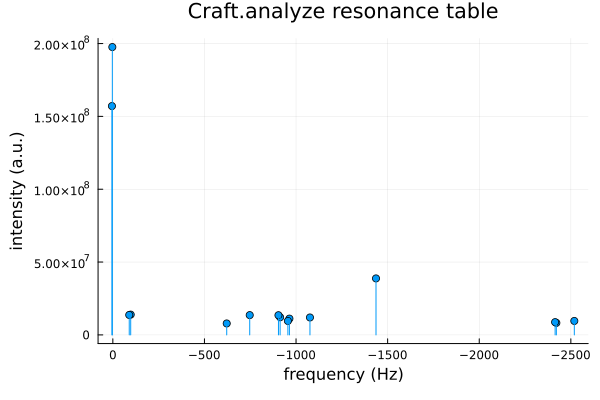

Sinusoidal Decomposition of FIDs (Craft.jl)
NMRflux.Craft decomposes an FID into a small set of damped complex sinusoids, rather than the continuous spectrum produced by Fourier transformation. Each sinusoid is described by a frequency, an amplitude, a phase, and a decay rate (equivalently, a transverse relaxation time $T_2$). This kind of parametric decomposition, following the approach pioneered by Bretthorst[Bretthorst1990] and applied to NMR quantification by Krishnamurthy[Krishnamurthy2013], is well suited to comparing measured peaks against a database of reference resonances, or to direct quantification of individual signals without first extracting a frequency-domain spectrum.
1.1 Approach
Fitting all parameters of all $K$ sinusoids simultaneously is a hard, ill-conditioned nonlinear optimisation: nearby oscillators can drift, swap, or merge into one another, and the problem has many nearly-equivalent local minima. Craft.jl avoids this by splitting the estimation into two stages:
- Frequency estimation via ESPRIT. The $K$ frequencies (and rough decay rate estimates) are extracted directly from the data using the ESPRIT algorithm, a subspace method that exploits the rotational invariance of the signal subspace. This gives superresolution frequency estimates without searching over a frequency grid, and does not itself require a nonlinear fit.
- Amplitude, phase and decay rate fitting. With the frequencies fixed at their ESPRIT estimates, the remaining model is linear in the complex amplitudes and only mildly nonlinear in the decay rates (which are reparametrised through a sigmoid to keep them positive and bounded). This is a well-conditioned nonlinear least-squares problem, solved with
LsqFit.jl.
The number of oscillators $K$ is a free choice; it can be selected by comparing the Laplace approximation to the log-evidence across different values of $K$ (see Craft.laplace_log_evidence), trading off fit quality against model complexity.
1.2 A quick example: Craft.analyze
The most convenient entry point is Craft.analyze(fid, K), which runs ESPRIT followed by the fixed-frequency fit and returns a Dict summarising the result. The two keys of most everyday interest are:
"resonance_table"— aDataFrame, one row per resonance, with columnsfrequency_hz,intensity,phase_radandlinewidth_hz"fit"— the underlyingLsqFit.LsqFitResult, giving access to fit diagnostics such as confidence intervals
We illustrate this on an experimental FID from the example datasets shipped with NMRflux.jl:
using NMRflux
using NMRflux.Examples
using Plots
import NMRflux.Craft
data_bruker = NMRflux.Examples.Data["HCC cell culture media spectra"]
params_bruker, fid_full = NMRflux.load(joinpath(data_bruker["path"], "10"), :Bruker)
fid = fid_full[1:4096, 1] # a short section of the FID, for a fast example
result = Craft.analyze(fid, 15)
result["resonance_table"]| Row | frequency_hz | intensity | phase_rad | linewidth_hz |
|---|---|---|---|---|
| Float64 | Float64 | Float64 | Float64 | |
| 1 | -2518.96 | 9.57961e6 | 0.296181 | 0.0 |
| 2 | -2420.94 | 8.23462e6 | 0.104355 | 0.0 |
| 3 | -2414.19 | 8.7559e6 | 0.0689679 | 0.0 |
| 4 | -1436.45 | 3.87715e7 | -0.276913 | 0.0 |
| 5 | -1075.91 | 1.19602e7 | -0.365161 | 0.0 |
| 6 | -963.846 | 1.11742e7 | -0.704315 | 0.0 |
| 7 | -955.493 | 9.55944e6 | -0.325634 | 0.0 |
| 8 | -913.115 | 1.20908e7 | -0.600134 | 0.0 |
| 9 | -904.026 | 1.3508e7 | -0.393319 | 0.0 |
| 10 | -747.158 | 1.35807e7 | -0.405235 | 0.0 |
| 11 | -621.609 | 7.85292e6 | -0.839052 | 0.0 |
| 12 | -97.4997 | 1.39342e7 | -0.864489 | 0.0 |
| 13 | -89.5546 | 1.36908e7 | -0.825156 | 0.0 |
| 14 | 2.73801 | 1.97581e8 | -0.783923 | 0.0 |
| 15 | 4.92515 | 1.57076e8 | -1.00776 | 0.0 |
Plotting the fitted intensities against their frequencies gives a "stick spectrum" summarising the decomposition:
tbl = result["resonance_table"]
plot(tbl.frequency_hz, tbl.intensity, seriestype = :sticks, marker = :circle,
xaxis = :flip, legend = false,
xlabel = "frequency (Hz)", ylabel = "intensity (a.u.)",
title = "Craft.analyze resonance table")
The other entries of result ("n_oscillators", "residual", "log_evidence", and the lower-level "resonances" list of per-resonance Dicts) are produced by Craft.fit_fid_fixed_freq, which analyze calls internally; see its docstring in the Reference for details.
1.3 References
- Bretthorst1990G. L. Bretthorst, "Bayesian analysis. I. Parameter estimation using quadrature NMR models," J. Magn. Reson. (1969), vol. 88, no. 3, pp. 533–551, 1990. doi:10.1016/0022-2364(90)90287-J
- Krishnamurthy2013K. Krishnamurthy, "CRAFT (complete reduction to amplitude frequency table) — robust and time-efficient Bayesian approach for quantitative mixture analysis by NMR," Magn. Reson. Chem., vol. 51, no. 12, pp. 821–829, 2013. doi:10.1002/mrc.4022